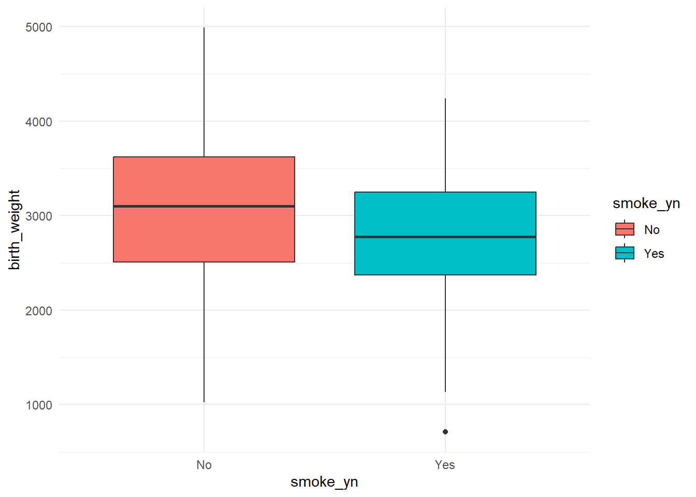

library(tidyverse)
library(readxl)
library(summarytools)
library(gmodels)Low Birthweight Analysis
Setup
Load Data
lbw_data <- read_excel('data/Low birth weight.xlsx') %>%
rename(mother_weight = lwt,
preterm_labor = ptl,
hypertension = ht,
uterine_irritability = ui,
first_trimester_vist = ftv,
birth_weight = bwt) %>%
mutate(smoke_yn = if_else(smoke == 1, 'Yes', 'No'),
hypertension_yn = factor(hypertension,
labels = c('No', 'Yes'))
)
lbw_data# A tibble: 189 × 12
id low age mother_weight smoke preterm_labor hypertension
<dbl> <dbl> <dbl> <dbl> <dbl> <dbl> <dbl>
1 85 0 19 182 0 0 0
2 86 0 33 155 0 0 0
3 87 0 20 105 1 0 0
4 88 0 21 108 1 0 0
5 89 0 18 107 1 0 0
6 91 0 21 124 0 0 0
7 92 0 22 118 0 0 0
8 93 0 17 103 0 0 0
9 94 0 29 123 1 0 0
10 95 0 26 113 1 0 0
# ℹ 179 more rows
# ℹ 5 more variables: uterine_irritability <dbl>, first_trimester_vist <dbl>,
# birth_weight <dbl>, smoke_yn <chr>, hypertension_yn <fct>Simple Frequency Tables
Individual Frequency Tables
lbw_data %>%
group_by(smoke_yn) %>%
summarise(count = n()) %>%
ungroup() %>%
summarise(smoke_yn,
count,
proportion = round(count/sum(count), 2),
percentage = proportion * 100) %>%
mutate(percentage_w_n = glue::glue('{count} ({percentage}%)' )) %>%
select(smoke_yn, percentage_w_n)# A tibble: 2 × 2
smoke_yn percentage_w_n
<chr> <glue>
1 No 115 (61%)
2 Yes 74 (39%) lbw_data %>%
group_by(hypertension_yn) %>%
summarise(count = n()) %>%
ungroup() %>%
summarise(hypertension_yn,
count,
proportion = round(count/sum(count), 2),
percentage = proportion * 100) %>%
mutate(percentage_w_n = glue::glue('{count} ({percentage}%)')) %>%
select(hypertension_yn, percentage_w_n)# A tibble: 2 × 2
hypertension_yn percentage_w_n
<fct> <glue>
1 No 177 (94%)
2 Yes 12 (6%) CrossTable(lbw_data$smoke_yn, lbw_data$hypertension_yn, chisq = TRUE)
Cell Contents
|-------------------------|
| N |
| Chi-square contribution |
| N / Row Total |
| N / Col Total |
| N / Table Total |
|-------------------------|
Total Observations in Table: 189
| lbw_data$hypertension_yn
lbw_data$smoke_yn | No | Yes | Row Total |
------------------|-----------|-----------|-----------|
No | 108 | 7 | 115 |
| 0.001 | 0.012 | |
| 0.939 | 0.061 | 0.608 |
| 0.610 | 0.583 | |
| 0.571 | 0.037 | |
------------------|-----------|-----------|-----------|
Yes | 69 | 5 | 74 |
| 0.001 | 0.019 | |
| 0.932 | 0.068 | 0.392 |
| 0.390 | 0.417 | |
| 0.365 | 0.026 | |
------------------|-----------|-----------|-----------|
Column Total | 177 | 12 | 189 |
| 0.937 | 0.063 | |
------------------|-----------|-----------|-----------|
Statistics for All Table Factors
Pearson's Chi-squared test
------------------------------------------------------------
Chi^2 = 0.03397249 d.f. = 1 p = 0.8537653
Pearson's Chi-squared test with Yates' continuity correction
------------------------------------------------------------
Chi^2 = 1.683696e-31 d.f. = 1 p = 1
CrossTable(lbw_data$smoke_yn, lbw_data$low, chisq = TRUE)
Cell Contents
|-------------------------|
| N |
| Chi-square contribution |
| N / Row Total |
| N / Col Total |
| N / Table Total |
|-------------------------|
Total Observations in Table: 189
| lbw_data$low
lbw_data$smoke_yn | 0 | 1 | Row Total |
------------------|-----------|-----------|-----------|
No | 86 | 29 | 115 |
| 0.602 | 1.326 | |
| 0.748 | 0.252 | 0.608 |
| 0.662 | 0.492 | |
| 0.455 | 0.153 | |
------------------|-----------|-----------|-----------|
Yes | 44 | 30 | 74 |
| 0.935 | 2.061 | |
| 0.595 | 0.405 | 0.392 |
| 0.338 | 0.508 | |
| 0.233 | 0.159 | |
------------------|-----------|-----------|-----------|
Column Total | 130 | 59 | 189 |
| 0.688 | 0.312 | |
------------------|-----------|-----------|-----------|
Statistics for All Table Factors
Pearson's Chi-squared test
------------------------------------------------------------
Chi^2 = 4.923705 d.f. = 1 p = 0.02649064
Pearson's Chi-squared test with Yates' continuity correction
------------------------------------------------------------
Chi^2 = 4.235929 d.f. = 1 p = 0.03957697
Comprehensive Frequency Tables
freq(lbw_data)Frequencies
lbw_data$low
Type: Numeric
Freq % Valid % Valid Cum. % Total % Total Cum.
----------- ------ --------- -------------- --------- --------------
0 130 68.78 68.78 68.78 68.78
1 59 31.22 100.00 31.22 100.00
<NA> 0 0.00 100.00
Total 189 100.00 100.00 100.00 100.00
lbw_data$age
Type: Numeric
Freq % Valid % Valid Cum. % Total % Total Cum.
----------- ------ --------- -------------- --------- --------------
14 3 1.59 1.59 1.59 1.59
15 3 1.59 3.17 1.59 3.17
16 7 3.70 6.88 3.70 6.88
17 12 6.35 13.23 6.35 13.23
18 10 5.29 18.52 5.29 18.52
19 16 8.47 26.98 8.47 26.98
20 18 9.52 36.51 9.52 36.51
21 12 6.35 42.86 6.35 42.86
22 13 6.88 49.74 6.88 49.74
23 13 6.88 56.61 6.88 56.61
24 13 6.88 63.49 6.88 63.49
25 15 7.94 71.43 7.94 71.43
26 8 4.23 75.66 4.23 75.66
27 3 1.59 77.25 1.59 77.25
28 9 4.76 82.01 4.76 82.01
29 7 3.70 85.71 3.70 85.71
30 7 3.70 89.42 3.70 89.42
31 5 2.65 92.06 2.65 92.06
32 6 3.17 95.24 3.17 95.24
33 3 1.59 96.83 1.59 96.83
34 1 0.53 97.35 0.53 97.35
35 2 1.06 98.41 1.06 98.41
36 2 1.06 99.47 1.06 99.47
45 1 0.53 100.00 0.53 100.00
<NA> 0 0.00 100.00
Total 189 100.00 100.00 100.00 100.00
lbw_data$smoke
Type: Numeric
Freq % Valid % Valid Cum. % Total % Total Cum.
----------- ------ --------- -------------- --------- --------------
0 115 60.85 60.85 60.85 60.85
1 74 39.15 100.00 39.15 100.00
<NA> 0 0.00 100.00
Total 189 100.00 100.00 100.00 100.00
lbw_data$preterm_labor
Type: Numeric
Freq % Valid % Valid Cum. % Total % Total Cum.
----------- ------ --------- -------------- --------- --------------
0 159 84.13 84.13 84.13 84.13
1 24 12.70 96.83 12.70 96.83
2 5 2.65 99.47 2.65 99.47
3 1 0.53 100.00 0.53 100.00
<NA> 0 0.00 100.00
Total 189 100.00 100.00 100.00 100.00
lbw_data$hypertension
Type: Numeric
Freq % Valid % Valid Cum. % Total % Total Cum.
----------- ------ --------- -------------- --------- --------------
0 177 93.65 93.65 93.65 93.65
1 12 6.35 100.00 6.35 100.00
<NA> 0 0.00 100.00
Total 189 100.00 100.00 100.00 100.00
lbw_data$uterine_irritability
Type: Numeric
Freq % Valid % Valid Cum. % Total % Total Cum.
----------- ------ --------- -------------- --------- --------------
0 161 85.19 85.19 85.19 85.19
1 28 14.81 100.00 14.81 100.00
<NA> 0 0.00 100.00
Total 189 100.00 100.00 100.00 100.00
lbw_data$first_trimester_vist
Type: Numeric
Freq % Valid % Valid Cum. % Total % Total Cum.
----------- ------ --------- -------------- --------- --------------
0 100 52.91 52.91 52.91 52.91
1 47 24.87 77.78 24.87 77.78
2 30 15.87 93.65 15.87 93.65
3 7 3.70 97.35 3.70 97.35
4 4 2.12 99.47 2.12 99.47
6 1 0.53 100.00 0.53 100.00
<NA> 0 0.00 100.00
Total 189 100.00 100.00 100.00 100.00
lbw_data$smoke_yn
Type: Character
Freq % Valid % Valid Cum. % Total % Total Cum.
----------- ------ --------- -------------- --------- --------------
No 115 60.85 60.85 60.85 60.85
Yes 74 39.15 100.00 39.15 100.00
<NA> 0 0.00 100.00
Total 189 100.00 100.00 100.00 100.00
lbw_data$hypertension_yn
Type: Factor
Freq % Valid % Valid Cum. % Total % Total Cum.
----------- ------ --------- -------------- --------- --------------
No 177 93.65 93.65 93.65 93.65
Yes 12 6.35 100.00 6.35 100.00
<NA> 0 0.00 100.00
Total 189 100.00 100.00 100.00 100.00T.Test
t.test(lbw_data$birth_weight ~ lbw_data$smoke_yn,
var.equal = TRUE,
alternative = "two.sided")
Two Sample t-test
data: lbw_data$birth_weight by lbw_data$smoke_yn
t = 2.6428, df = 187, p-value = 0.00892
alternative hypothesis: true difference in means between group No and group Yes is not equal to 0
95 percent confidence interval:
71.66693 493.65152
sample estimates:
mean in group No mean in group Yes
3054.957 2772.297 lbw_data %>%
ggplot(aes(x = smoke_yn,
y = birth_weight,
fill = smoke_yn)) +
geom_boxplot() +
theme_minimal()
Logistic Regression
glm(low ~ smoke, family = binomial(logit), data = lbw_data)
Call: glm(formula = low ~ smoke, family = binomial(logit), data = lbw_data)
Coefficients:
(Intercept) smoke
-1.0871 0.7041
Degrees of Freedom: 188 Total (i.e. Null); 187 Residual
Null Deviance: 234.7
Residual Deviance: 229.8 AIC: 233.8low_smoke_hyp <- glm(low ~ smoke + hypertension, family = binomial(logit), data = lbw_data)
summary(low_smoke_hyp)
Call:
glm(formula = low ~ smoke + hypertension, family = binomial(logit),
data = lbw_data)
Coefficients:
Estimate Std. Error z value Pr(>|z|)
(Intercept) -1.1787 0.2232 -5.281 1.28e-07 ***
smoke 0.7119 0.3237 2.199 0.0278 *
hypertension 1.2300 0.6177 1.991 0.0464 *
---
Signif. codes: 0 '***' 0.001 '**' 0.01 '*' 0.05 '.' 0.1 ' ' 1
(Dispersion parameter for binomial family taken to be 1)
Null deviance: 234.67 on 188 degrees of freedom
Residual deviance: 225.79 on 186 degrees of freedom
AIC: 231.79
Number of Fisher Scoring iterations: 4exp(cbind(OR = coef(low_smoke_hyp), confint(low_smoke_hyp))) OR 2.5 % 97.5 %
(Intercept) 0.3076679 0.1950373 0.4695378
smoke 2.0378018 1.0821297 3.8628937
hypertension 3.4213892 1.0272467 12.2316282